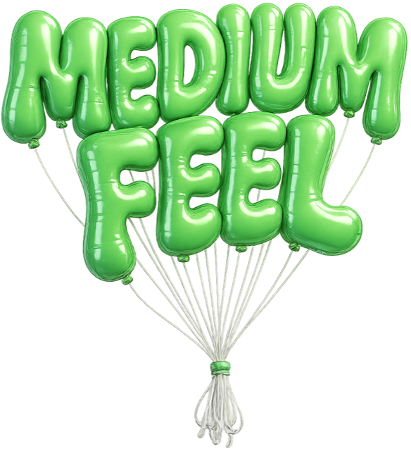

The Best Thing Claude Code Taught Me Was Something I Already Knew The most valuable thing I built wasn’t code. It was a list of everything I didn’t build. Building · February 16, 2026 · 4 min read Read the post →
I’ve Spent My Career on Other People’s Projects. Here’s What Happened When I Started Building My Own. The entry point wasn’t technical. It was the work I already do. Exploring · February 10, 2026 · 4 min read Read the post →
 Shipping the Lab: A Build Log How I built and shipped the Medium Feel website in a half-day using Claude Code, with no coding experience. The first documented experiment. Shipped · January 21, 2026 · 5 min read Read the post →